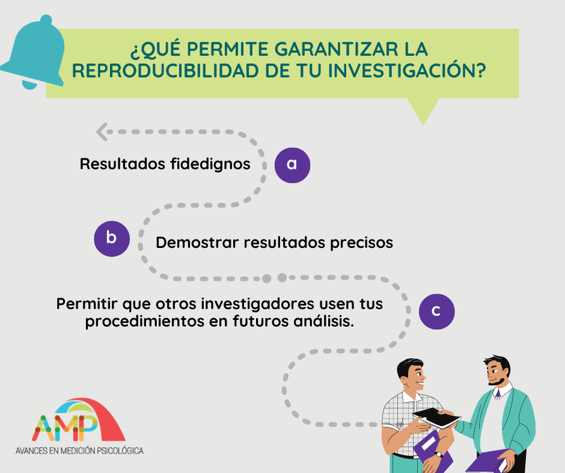

El artículo de Epskamp (2019) plantea una revisión teórica-metodológica acerca de los factores que se encuentran en juego al momento de conseguir la reproducibilidad y replicabilidad, teniendo en cuenta que nos encontramos en un escenario de enorme rapidez en el desarrollo de métodos de análisis, disponibilidad de software y auxiliares que pueden contribuir en el proceso de investigación. Para lograr la reproducibilidad y en consecuencia, poder evaluar el escenario de lograr la replicabilidad, intervienen factores como la documentación, disposición de datos, códigos de análisis, acceso al software utilizado, entre otros. Siendo el software y análisis de datos quienes cobran un protagonismo importante al momento de evaluar su factibilidad.

- Software en versiones beta: Los software tienen un ciclo de desarrollo: alfa, beta, estable; que tienen relación con la nomenclatura a la hora de indicar su versión. Por ejemplo, R está en la versión 4.0.5 al momento.
Cuando un software está en desarrollo interno, se conoce como fase alfa (ultra-temprana), y generalmente cuando está disponible para testing público, pasa a ser fase beta. Es casi una regla que los software en fase beta tengan versiones por debajo de 1.0.0, por ej. lavaan que está actualmente en la versión 0.6.8. Cuando un software llega a la versión 1.0.0 se considera que llegó a una fase estable, donde se esperaría que el core (núcleo) del software no cambie más y se mantenga a lo largo de los años.
- Actualizaciones y dependencias: Cuando el software está en estado beta, las actualizaciones pueden contener cambios severos en la forma de hacer las cosas. Por ej. el paquete dplyr al estar aún en estado beta, dejará de usar las variaciones _at, _if y _all de mutate, select, filter, summarise, entre otros, para usar across en su lugar. Actualmente aún se pueden usar ambos, pero puede que dentro de un tiempo, ya no.
1. Utilizar software estable. Donde, a pesar de los años, no haya cambios drásticos en el software.
2. Proporcionar códigos e información suficiente junto a la publicación. El nombre del software, paquete y versión podría no ser suficiente para la reproducibilidad. El escenario ideal es poder tener una captura exacta de todo el software y/o paquetes junto a sus dependencias instaladas en una máquina al momento del análisis. De esa manera, cuando alguien quisiera replicarlo, podría estar en exactamente las mismas condiciones en las que se hizo el análisis sea hace 1 mes o hace 10 años.
Para hacerlo hay 3 alternativas populares:
- Uso de Docker: Es la manera por defecto que se utiliza en muchísimos proyectos de análisis, desarrollo de software, páginas web, etc. Sin embargo, al tener un nivel de complejidad relativamente más alta y no estar conectado directamente a R para su ejecución, hace que su uso en análisis de datos sea poco frecuente.
- Uso del paquete checkpoint (Ooi et al., 2020): Mediante este paquete se puede instalar paquetes y versiones de R que se encontraban vigentes en una determinada fecha. Así, mediante la función checkpoint::checkpoint(“2018-09-27”).
- Uso del paquete renv (Ushey & RStudio, 2021): Este paquete reemplaza a packrat que se menciona en el artículo. Su función es capturar y guardar un registro de todos los paquetes utilizados en un determinado momento, incluyendo sus versiones, para que de esa manera se pueda instalar automáticamente todo ello a posterior.
En el caso de la replicabilidad, no basta con llegar a encontrar los mismos resultados por ejecución de código o análisis, sino el verificar que los procedimientos sean los adecuados (supuestos estadísticos por ej.), probables errores cometidos, cambios en los escenarios teóricos-metodológicos que fundamentan la investigación hasta incluso los errores en codificación. La intención es que sea con los mismos datos o con una nueva recolección de datos, las conclusiones a las que se llegue deben apoyar las generadas en el estudio inicial.
Epskamp, S. (2019). Reproducibility and replicability in a fast-paced methodological world. Advances in Methods and Practices in Psychological Science, 2(2), 145-155. https://doi.org/10.1177/2515245919847421
Ooi, H., Vries, A. de, & Microsoft. (2020). Checkpoint: Install packages from snapshots on the checkpoint server for reproducibility (0.4.10) [Computer software]. https://CRAN.R-project.org/package=checkpoint
Ushey, K., & RStudio. (2021). Renv: Project environments (0.13.2) [Computer software]. https://CRAN.R-project.org/package=renv